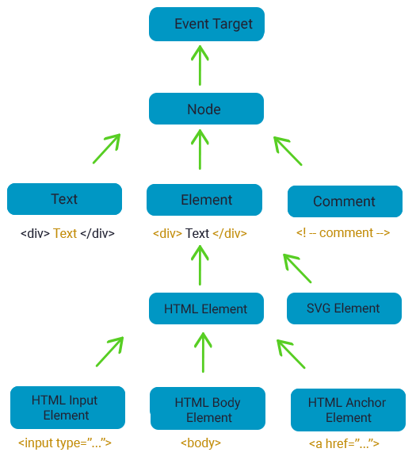

Свойства DOM-узлов
Часто используемые свойствами DOM-узлов:

Все элементы DOM содержат вот этот корневой класс EventTarget и класс Node, который наследуется от него. Далее, начинается специализация классов: Text – для текстовых элементов; Element – для тегов; Comment – для комментариев.
Базовые классы EventTarget и Node являются абстрактными, то есть, они служат только для построения других (дочерних) классов, но сами по себе существовать не могут – только в составе других классов. Остальные объекты могут быть созданы и быть узлом DOM-дерева.
Чтобы узнать имя класса DOM-узла, обычно, у объекта есть свойство constructor. Оно ссылается на конструктор класса, и в свойстве constructor.name содержится его имя:
console.log( document.body.constructor.name )Если мы хотим отобразить в консоли структуру объекта, то вместо console.log следует использовать console.dir:
console.dir(document.body)Имя узла можно узнать по свойствам nodeName и tagName:
console.log(document.body.nodeName)А вот если отобразить свойство tagName, то получим следующее:
console.log(document.body.tagName)у комментария нет свойства tagName, оно есть только у тега-элемента и имеет то же значение, что и nodeName. Это справедливо и для всех остальных типов элементов: tagName – имя свойства тега-элемента; nodeName – имя свойства любого узла DOM-дерева. В общем случае мы всегда можем использовать nodeName для любых узлов, чтобы узнать его имя.
innerHTML
У элементов-тегов имеется свойство innerHTML, позволяющее читать и менять содержимое любых тегов HTML-документа. Например, вот так
let h1 = document.body.firstChild.nextSiblingconsole.log(h1.innerHTML)можно вывести содержимое заголовка h1 в консоль. А вот так изменить его:
h1.innerHTML = "Измененный заголовок"outerHTML
Следующее свойство тега-элемента outerHTML работает также как и innerHTML, но содержит информацию не только о содержимом тега, но и сам тег. С его помощью мы можем изменять тег целиком, то есть, на его место записывать другой тег. Например:
h1.outerHTML = "<h2>Измененный заголовок из h1 в </h2>"Теперь у нас вместо заголовка h1 появляется заголовок h2 с новым содержимым. И здесь есть одна тонкость: переменная h1 продолжает содержать информацию о заголовке h1:
console.dir(h1)То есть, мы на странице заменили этот заголовок, но в переменной прежняя информация продолжает существовать. В частности, если вывести содержимое свойства outerHTML, то увидим прежний заголовок:
console.log(h1.outerHTML)Поэтому, как только мы заменяем какой-либо элемент через свойство outerHTML, прежнюю переменную следует либо обновить новой информацией, либо отбросить и в дальнейшем не использовать.